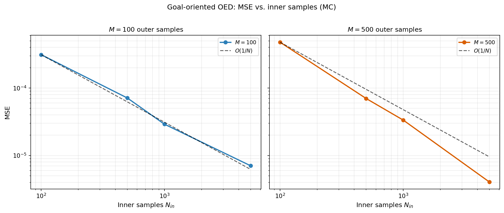

import numpy as np
import matplotlib.pyplot as plt
from pyapprox.util.backends.numpy import NumpyBkd
from pyapprox_benchmarks.expdesign.linear_gaussian_pred import (
build_linear_gaussian_pred_benchmark,
)
from pyapprox.expdesign.data import generate_oed_data
from pyapprox.expdesign.diagnostics import (
PredictionOEDDiagnostics,
compute_convergence_rate,
compute_estimator_mse,
)
from pyapprox.expdesign.diagnostics.prediction_diagnostics import (
create_prediction_oed_diagnostics,
)
from pyapprox.expdesign.quadrature import MonteCarloSampler
from pyapprox.expdesign.quadrature.oed import (
OEDQuadratureSampler,
build_oed_joint_distribution,
)
np.random.seed(1)
bkd = NumpyBkd()Goal-Oriented OED: Convergence Verification
PyApprox Tutorial Library
Using PredictionOEDDiagnostics to verify that numerical risk-aware utility estimates converge to analytical values, and comparing MC vs. Halton convergence rates.
TipDownload Notebook
Learning Objectives
After completing this tutorial, you will be able to:
- Construct a linear Gaussian prediction OED benchmark and query its analytical utility
- Use
PredictionOEDDiagnosticsto compute numerical utility estimates from raw samples - Use
compute_estimator_mseto decompose MSE into bias and variance - Explain why the inner loop (not outer) drives convergence for goal-oriented OED
- Compare MC convergence rates for the standard deviation utility
Prerequisites
Read Goal-Oriented Bayesian OED and Gaussian Posterior Expressions.
Quick Recap
From the analysis tutorial, the expected standard deviation of the posterior push-forward in a linear Gaussian model is:
\[ U_\mathrm{std}(\mathbf{w}) = \sqrt{\boldsymbol{\psi}\boldsymbol{\Sigma}_\star(\mathbf{w})\boldsymbol{\psi}^\top}. \]
This is deterministic — no averaging over observations is needed. The numerical estimator must reproduce this from Monte Carlo samples alone. Because the estimator uses ratios of QoI-weighted likelihoods, the bias from the inner loop dominates, unlike the EIG estimator.
Setup
nobs = 2
degree = 3
noise_std = 0.5
prior_std = 0.5
npred = 1
benchmark = build_linear_gaussian_pred_benchmark(
nobs, degree, noise_std, prior_std, npred, bkd,
)
problem = benchmark.problem()
nparams = problem.nparams()
# Create diagnostics with the linear stdev utility type
noise_variances = bkd.full((nobs,), noise_std**2)
diagnostics = create_prediction_oed_diagnostics(
noise_variances, npred, "linear_mean_mean_stdev", bkd,
)
# Uniform design weights
weights = bkd.ones((nobs, 1)) / nobsThe diagnostics API separates sampling from estimation. OEDQuadratureSampler draws joint (prior + noise) samples, and generate_oed_data evaluates obs_map and qoi_map on those samples:
joint_dist = build_oed_joint_distribution(problem, bkd)
def make_mc_sampler(seed):
"""Create a MonteCarloSampler for the joint distribution."""
np.random.seed(seed)
return OEDQuadratureSampler(
MonteCarloSampler(joint_dist, bkd), nparams, bkd,
)Analytical Reference Value
exact = benchmark.exact_risk_utility(weights, "linear_mean_mean_stdev")A single numerical estimate:
data = generate_oed_data(
problem, make_mc_sampler(42), make_mc_sampler(5042), 500, 1000,
)
approx = diagnostics.compute_numerical_utility(
weights, data.outer_shapes, data.latent_samples,
data.inner_shapes, data.qoi_vals,
)MSE Decomposition
def compute_utility_realization(nouter, ninner, seed):
data = generate_oed_data(
problem, make_mc_sampler(seed), make_mc_sampler(seed + 5000),
nouter, ninner,
)
return diagnostics.compute_numerical_utility(
weights, data.outer_shapes, data.latent_samples,
data.inner_shapes, data.qoi_vals,
)
estimates = [compute_utility_realization(100, 500, seed=s) for s in range(50)]
bias, variance, mse = compute_estimator_mse(exact, estimates)
NoteInner loop dominates for goal-oriented OED
Compare to the EIG case in boed_kl_usage.qmd: there, outer samples drive the MSE. Here, the inner samples drive it. You can verify this by holding ninner fixed while increasing nouter — the MSE barely changes.
MSE vs. Inner Sample Count (MC)
outer_counts = [100, 500] # fixed at modest values
inner_counts = [100, 500, 1000, 5000]
nrealizations = 50
def sweep_pred_mse(outer_list, inner_list):
"""Compute MSE grid over outer x inner sample counts."""
all_mse, all_sqbias, all_var = [], [], []
for ninner in inner_list:
mse_row, sqbias_row, var_row = [], [], []
for nouter in outer_list:
ests = [compute_utility_realization(nouter, ninner, seed=s)
for s in range(nrealizations)]
b, v, m = compute_estimator_mse(exact, ests)
mse_row.append(m)
sqbias_row.append(b**2)
var_row.append(v)
all_mse.append(bkd.asarray(mse_row))
all_sqbias.append(bkd.asarray(sqbias_row))
all_var.append(bkd.asarray(var_row))
return {"mse": all_mse, "sqbias": all_sqbias, "variance": all_var}
values_mc = sweep_pred_mse(outer_counts, inner_counts)
# MC convergence rates (w.r.t. inner samples)
mse_array = bkd.to_numpy(bkd.vstack(values_mc["mse"])) # (n_inner, n_outer)
for jj, nouter in enumerate(outer_counts):
mse_values = mse_array[:, jj].tolist()
rate = compute_convergence_rate(inner_counts, mse_values)AVaR Deviation Variant
Switching to AVaR deviation requires only changing the utility type in the create_prediction_oed_diagnostics call.
diagnostics_avar = create_prediction_oed_diagnostics(
noise_variances, npred, "linear_avar_mean_avar", bkd, beta=0.9,
)
exact_avar = benchmark.exact_risk_utility(
weights, "linear_avar_mean_avar", beta=0.9,
)Key Takeaways
- For goal-oriented OED, inner samples dominate MSE convergence — increasing outer samples alone barely reduces error.
PredictionOEDDiagnosticsaccepts raw sample arrays — the caller generates samples and passes them in, making it easy to swap sampling strategies.compute_estimator_mseandcompute_convergence_rateare standalone utilities that work with any estimator.- Switching between standard deviation and AVaR utility requires only changing
utility_typein thecreate_prediction_oed_diagnosticscall.
Exercises
Run the MSE sweep varying
outer_countswithninnerfixed at 2000. Confirm that the MSE does not decrease.Try
npred=3(three QoI components). Does the analytical utility change? Does the convergence rate change?Compare
exact_utilityfor designs that concentrate all weight on one observation vs. uniform weights. Which is better for this polynomial model?
Next Steps
- Optimize the design weights using the gradient expressions from Bayesian OED: Gradients and the Reparameterization Trick adapted for the goal-oriented utility
- Extend to nonlinear models where no analytical reference is available